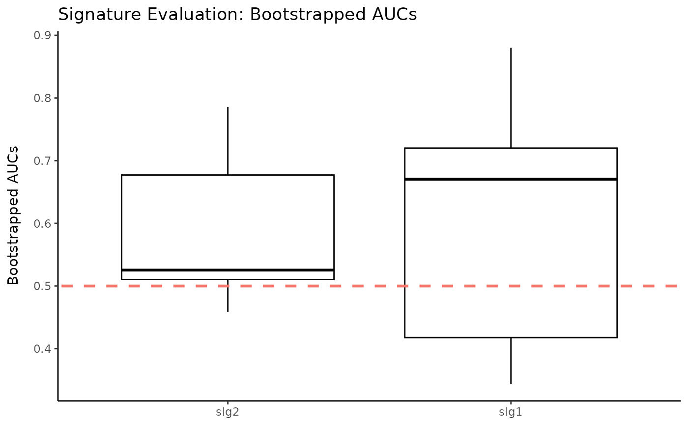

R/evaluate.R
plotQuantitative.RdThis function takes as input a data.frame with genetic expression
count data, and uses a bootstrapped leave-one-out cross validation procedure
with logistic regression to allow for numeric and graphical comparison
across any number of genetic signatures. It creates a boxplot of bootstrapped
AUC values.
plotQuantitative( df.input, targetVec.num, signature.list = NULL, signature.name.vec = NULL, num.boot = 100, pb.show = TRUE, name = "Signature Evaluation: Bootstrapped AUCs", fill.col = "white", outline.col = "black", abline.col = "red", rotateLabels = FALSE )
| df.input | a |
|---|---|
| targetVec.num | a numeric binary vector of the response variable.
The vector should be the same number of rows as |
| signature.list | a |
| signature.name.vec | A vector specifying the names of the signatures
to be compared. This should be the same length as |
| num.boot | an integer specifying the number of bootstrap iterations. |
| pb.show | logical. If |
| name | a character string giving a name for the outputted boxplot of
bootstrapped AUCs. The default is |
| fill.col | the color to be used to fill the boxplots.
The default is |
| outline.col | the color to be used for the boxplot outlines.
The default is |
| abline.col | the color to be used for the dotted line at AUC = 0.5
(the chance line). The default is |
| rotateLabels | logical. If |
a boxplot comparing the bootstrapped AUCs of inputted signatures
inputTest <- matrix(rnorm(1000), 100, 20, dimnames = list(paste0("gene", seq.int(1, 100)), paste0("sample", seq.int(1, 20)))) inputTest <- as.data.frame(inputTest) targetVec <- sample(c(0,1), replace = TRUE, size = 20) signature.list <- list(sig1 = c("gene1", "gene2", "gene3"), sig2 = c("gene4", "gene5", "gene6")) signature.name.vec <- c("sig1", "sig2") num.boot <- 5 plotQuantitative(inputTest, targetVec.num = targetVec, signature.list = signature.list, signature.name.vec = signature.name.vec, num.boot = num.boot, rotateLabels = FALSE)#> | | | 0% | |=================================== | 50% | |======================================================================| 100%